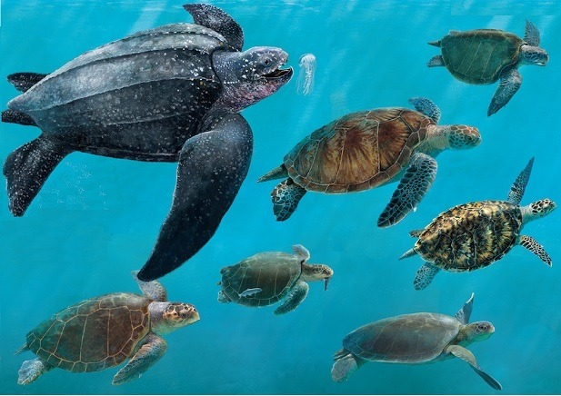

Página de Tortugas
Imágenes de Tortugas


Si quieres conocer más acerca de las tortugas, da click en el siguiente enlace: .
Listas de Tortugas
3 Cosas que las Tortugas Aman
- Comer Frutas
- Comer Verduras
- Cualquier tipo de carne
- Aman el Océano
3 Cosas que las Tortugas Odian
- Legumbres
- Granos
- Galletas
- Maíz